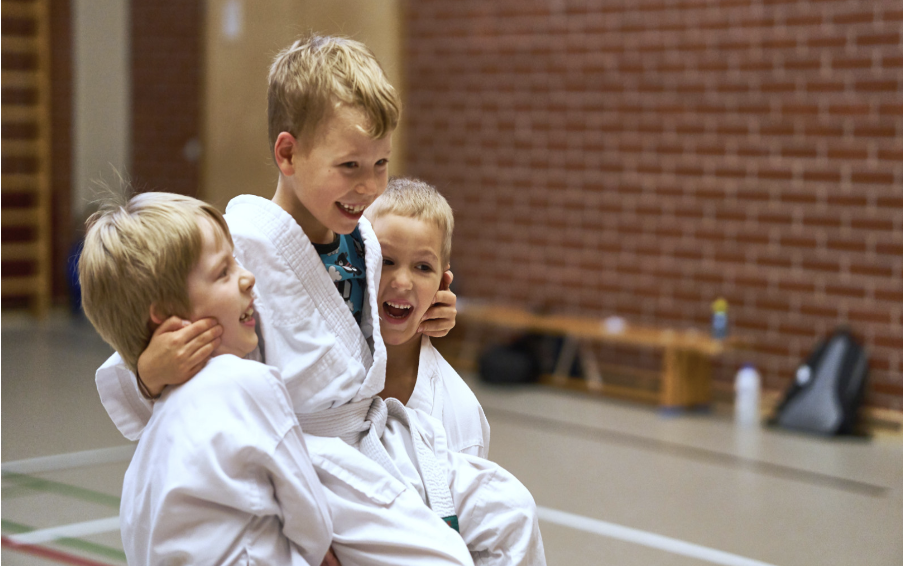
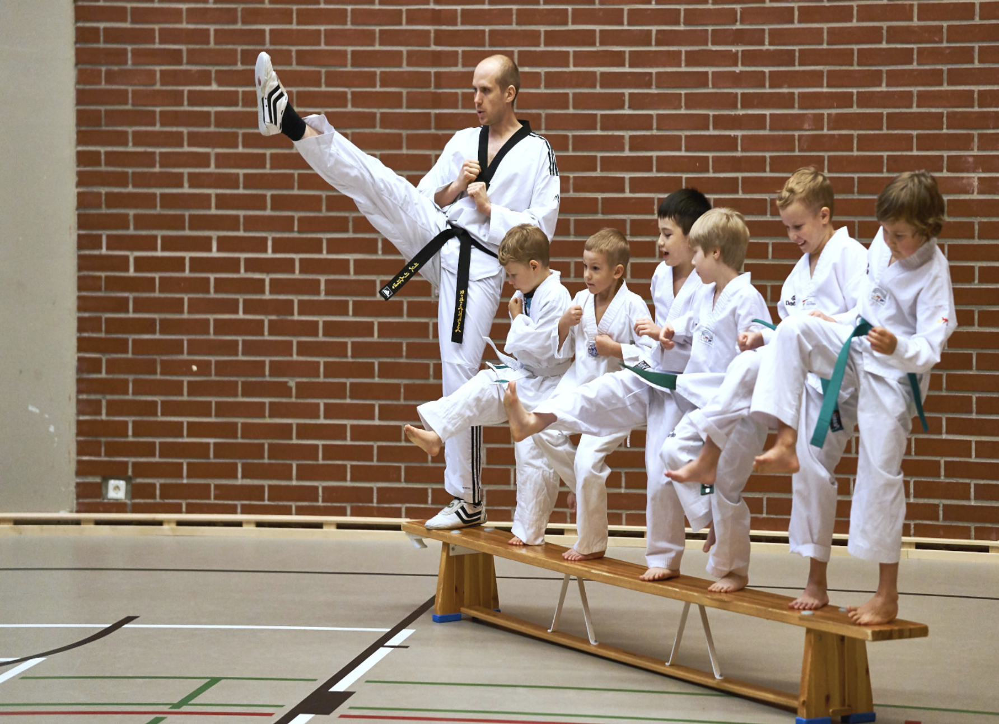
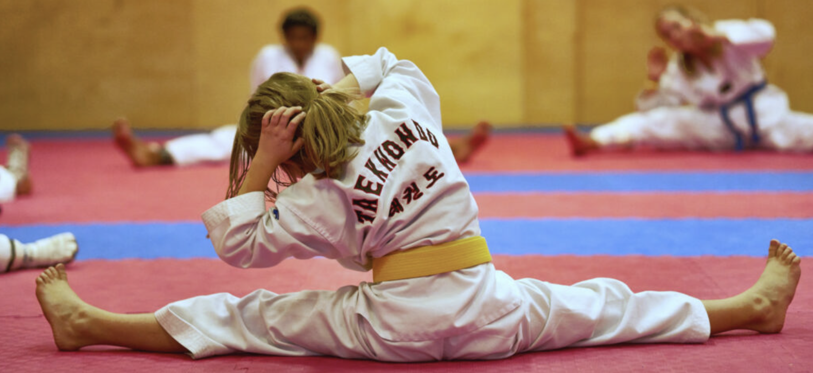

Järjestämme taekwondon harrastustoimintaa eri-ikäisille ja tasoisille lapsille ja nuorille 4-vuotiaasta lähtien. Katso sivun alaosasta lähimmän harjoitusryhmäsi
Harjoituksiin voi kuitenkin tulla mukaan koska vaan kauden aikana. Yli 13-vuotiaat nuoret ja sitä vanhemmat voivat osallistua ->>aikuisten peruskurssille.> AIKUISTEN PERUSKURSSILLE. LINK
Lasten ryhmät harjoittelevat eri puolilla pääkaupunkiseutua. Jos pohdit kahden alueen harjoitusten välillä, saat käydä ilmaiseksi kokeilemassa myös eri harjoitusryhmiä. Muista mainita tästä ilmoittautumisen yhteydessä.
Vanhempana olet myös tervetullut mukaan aloittamaan harrastusta yhdessä lapsesi kanssa. Varsinkin kouluryhmissä lasten mukana harjoittelee myös vanhempia ja seurassamme onkin monta perhettä, joissa yhteisestä harrastuksesta nauttii niin lapset kuin vanhemmatkin. Seurassamme vanhemmat saavat osallistua ja tukea toimintaa juuri siinä määrin kuin itse haluavat. Lisää taekwondoharrastajan vanhemman roolista seurassamme voit lukea -->>täältä.> LAPSI HARRASTAJAN VANHEMMILLE LINK
Huomioimme ->>harjoittelussa> HARJOITTELU LINK harrastajien iän sekä taitotason siten, että ne tukevat parhaiten lapsen liikunnallisten taitojen kehittymistä. 4-6-vuotiaiden ryhmässä keskitytään ensisijaisesti perusliikunnallisten taitojen kehittämiseen erilaisten leikkien ja temppuratojen muodossa. Vanhempien lasten ryhmissä painotus siirtyy hiljalleen lajinomaisempia taitoja kehittävään suuntaan. Harjoituksien vaativuudessa huomioidaan lapsen kyky esimerkiksi keskittyä tai liikunnallisesti suoriutua annetuista harjoitteista. Näin varmistamme, että harjoittelu on lapselle turvallista sekä innostavaa.
Lasten peruskurssi sopii lapsille ja nuorille 4-vuotiaasta lähtien.
ESPOON KESKUS (Lagstad)
Maanantaisisn Klo 18.00-18.45
ITÄKESKUS (DOJANG)
Keskiviikkoisin klo 17.00-17.45 Sunnuntaisin klo 15.00-15.45
LAUTTASAARI (Lågstadieskola)
Perjantaisin 17.00-17.45
LEPPÄVAARA (Ruusutorppa)
Keskiviikkoisin klo 17.00-17.45
OLARI (Kuitinmäki 2)
Sunnuntaisin klo 15.00-15.45
ITÄKESKUS (Dojang)
Maanantaisin klo 16.30-17.30 (10-14 vuotiaat) Maanantaisin klo 17.30-18.30 (7-9 vuotiaat) Torstaisin klo 16.30-17.30 (10-14 vuotiaat) Torstaisin klo 17.30-18.30 (7-9 vuotiaat) Sunnuntaisin klo 16.00-17.00 (10-14 vuotiaat) Sunnuntaisin klo 17.00-18.00 (7-9 vuotiaat)
PASILA
Maanantaisin klo 17.00-18.00 (7-13 vuotiaat)
PIHLAJAMÄKI
Keskiviikkoisin klo 17.30-18.30 (7-9 vuotiaat) Keskiviikkoisin klo 17.30-19.00 (10-13 vuotiaat)
LAAJASALO
Torstaisin klo 17.00-18.30 (7-13 vuotiaat)
LATOKARTANO
Tiistaisin klo 18.00-19.00 (7-9 vuotiaat) Tiistaisin klo 19.00-20.00 (10-13 vuotiaat)
LAUTTASAARI
Perjantaisin klo 18.00-19.00 (7-9 vuotiaat) Perjantaisiin klo 19.00-20.00 (10-14 vuotiaat)
ESPOON KESKUS (Kannusillanmäen väestösuoja)
Maanantaisin klo 19.30-20.30 (7-13 vuotiaat) Perjantaisin klo 19.30-20.30 (7-13 vuotiaat)
LEPPÄVAARA (Ruusutorppa)
Keskiviikkoisin klo 18.00-19.00 (7-9 vuotiaat)
OLARI (Päivänkehrän koulu)
Torstaisin klo 17.00-18.00 (10-13 vuotiaat) Torstaisin klo 18.00-19.00 (7-9 vuotiaat)
OLARI (Kuitinmäen koulu, rakennus 2)
Sunnuntaisin klo 13.00-14.00 (10-13 vuotiaat) Sunnuntaisin klo 14.00-15.00 (7-9 vuotiaat)
Katso tarkat osoitteet ja ohjeet harjoituksiin kulkemiseen ->>harjoituspaikat-sivulta> HARJOITUSPAIKAT LINK
Lasten peruskurssin hinta on 130 €. Hinta sisältää kevätkauden harjoitukset valitussa harjoitusryhmässä, kauden päätteeksi järjestettävän vyökokeen ja seuran jäsenmaksun vuodelle 2022. Ennen sitoutumista voi käydä kaksi viikkoa ilmaiseksi kokeilemassa harjoituksia.
Samassa taloudessa asuva toinen ja sitä seuraava perheenjäsen saa 20 % alennuksen harjoitusmaksuista. Mikäli maksut ovat eri suuruisia, myönnetään alennus edullisemmasta maksusta.
Ilmoita (itsesi ja) lapsesi mukaan ilmaisiin kokeiluihin täyttämällä oheinen lomake, tai lähettämällä vastaavat tiedot sähköpostitse osoitteeseen mari(@)wondo.fi.
Lisätietoa voi kysyä sähköpostitse / puhelimitse numerosta 040 543 5381 Marilta.
Harjoituksiin voi tulla mukaan pitkin vuotta.
